# load mydata
load(file = "mydata.RData")1.3.3: Data Visualization
(Asynchronous-Online)
Session Objectives
- To visualize data using different R packages.
This lesson module will include:
- Introductions to
ggplot2and other relevant R packages for graphics. - Visualizing one, two, and more variables at a time.
- Summary Tables with Graphics
- Lists of other resources: books, blogs, websites, etc.
0. Prework - Before You Begin
A. Install packages
If you do not have them already, install the following packages from CRAN:
B. Open/create your RStudio project
Let’s start with the myfirstRproject RStudio project you created in Module 1.3.2 - part 1. If you have not yet created this myfirstRproject RStudio project, go ahead and create a new RStudio Project for this lesson. Feel free to name your project whatever you want, it does not need to be named myfirstRproject.
C. Create a new R script and load data into your computing session
At the end of Module 1.3.2 - part 6 you saved the mydata dataset in the mydata.RData R binary format.
Go ahead and create a new R script (
*.R) for this computing session. We did this already in Module 1.3.1 - part 3 - refer to this section to remember how to create a new R script.Put this code into your new R script (
*.R) to loadmydata.RDatainto your current computing session.
Data must/should be in your RStudio project
REMEMBER R/RStudio automatically looks in your current RStudio project folder for all files for your current computing session. So, make sure the mydata.RData file is in your current RStudio project myfirstRproject folder on your computer.
For a more detailed overview of RStudio projects:
D. Get Inspired!
- Get Inspired at The R Graph Gallery
- Also see the Top Curated R Graphs
- Also see Additional Resources - R Graphics
1. Base R graphical functions
The base R graphics package is very powerful on its own. As you saw in 1.3.1: Introduction to R and R Studio, we can make a simple 2-dimensional scatterplot with the plot() function.
Base R - Scatterplot
For example, let’s make a plot of Height on the X-axis (horizontal) and WeightPRE on the Y-axis (vertical) from the mydata dataset. Since we are using base R function, we have to use the $selector to identify the variables we want inside the mydata dataset.
Learn more about the plot() function and arguments by running help(plot, package = "graphics").
plot(x = mydata$Height,
y = mydata$WeightPRE)
The plot does look a little odd - this is due to some data errors in the mydata dataset. We will fix these below. But for now, you can “see” that these data may have some issues that need to be addressed. For example:
- There are 2 people with heights < 5 feet tall which may be suspect
- There are 2 people with a weight < 100 pounds which may be data entry errors or incorrect units
For now, let’s add some additional graphical elements:
- a better label for the x-axis
- a better label for the y-axis
- a title for the graph
- a subtitle for the graph
plot(x = mydata$Height,
y = mydata$WeightPRE,
xlab = "Height (in decimal inches)",
ylab = "Weight (in pounds) - before intervention",
main = "Weight by Height in the Mydata Project",
sub = "Hypothetical Madeup mydata Dataset")
And we could also add color and change the shapes - for example, let’s color and shape the points by GenderCoded, the numeric coding for gender where 1=Male, 2=Female.
And we can add a legend inside the plot as well.
Plot code inspiration
I pulled this code together from code examples at:
plot(x = mydata$Height,
y = mydata$WeightPRE,
col = c("blue", "green")[mydata$GenderCoded],
pch = c(15, 19)[mydata$GenderCoded],
xlab = "Height (in decimal inches)",
ylab = "Weight (in pounds) - before intervention",
main = "Weight by Height in the Mydata Project",
sub = "Hypothetical Madeup mydata Dataset")
legend(3, 250, legend=c("Male", "Female"),
col=c("blue", "green"), pch = c(15, 19), cex=0.8)
The STHDA website on “R Base Graphs” has a nice walk through of using the base R graphics package to make really nice plots.
Base R - Histogram
Basic Histogram
As we noted above, let’s take a look at the distribution of the heights in the mydata dataset. There is a specific hist() function in the graphics package for making histograms, learn more by running help(hist, package = "graphics").
Notice that we can use some of the same arguments as we did above for plot().
hist(mydata$Height,
xlab = "Height (in decimal inches)",
col = "lightblue",
border = "black",
main = "Histogram of Heights",
sub = "Hypothetical Madeup mydata Dataset")
Colors available
There are 657 names of colors immediately available to you from the built-in grDevices Base R package which works in conjunction with graphics. You can view the names of all of these colors by running colors(). You can also learn more at:
- https://www.sthda.com/english/wiki/colors-in-r#google_vignette
- https://r-graph-gallery.com/42-colors-names.html
- https://r-graph-gallery.com/ggplot2-color.html - which explains how colors can be specified using the built-in color names, but can also be specified using RGB (red, green, blue) indexes or even Hexcodes for which there are many online tools like https://htmlcolorcodes.com/.
# code not run here - do in your session
# list built-in colors
colors()Histogram with Overlaid Density Curve
Statisticians often like seeing a histogram (for the frequencies or probability of each value for the variable in the dataset) with an overlaid density curve (which is “smoothed” line for these probabilities). Statistical software like SAS and SPSS make this really easy. However, in R, we need to think through the process to get this to work.
- First, we need to make the histogram using probabilities for the “bars” in the histogram instead of frequency counts.
- Second, we need to add a density line curve over the histogram “bars”.
See these online examples:
- https://r-charts.com/distribution/histogram-curves/
- https://www.datacamp.com/doc/r/histograms-and-density
- https://www.r-bloggers.com/2012/09/histogram-density-plot-combo-in-r/
# make histogram as we did above
# add freq = FALSE
hist(mydata$Height,
freq = FALSE,
xlab = "Height (in decimal inches)",
col = "lightblue",
border = "black",
main = "Histogram of Heights",
sub = "Hypothetical Madeup mydata Dataset")
# add density curve line
# add na.rm=TRUE to remove
# the missing values in Height
lines(density(mydata$Height, na.rm=TRUE),
col = "black")Fix the Heights
So as you can see in the histogram and in the scatterplot figures above for the Height variable, there are 2 people with heights under 4 feet tall.
# use dplyr::arrange()
library(dplyr)
mydata %>%
select(SubjectID, Height) %>%
arrange(Height) %>%
head()# A tibble: 6 × 2
SubjectID Height
<dbl> <dbl>
1 28 2.6
2 8 3.3
3 9 5.1
4 6 5.2
5 2 5.4
6 12 5.5Let’s look at these values:
-
SubjectIDnumber 28 has aHeightof 2.6 feet tall- If this wasn’t a made-up dataset, we could ask the original data collectors to see if there is a way to check this value in their records or possibly to re-measure this individual.
- For now, let’s assume this was a simple typo where the 2 numbers were transposed where this individual should be 6.2 feet tall.
-
SubjectIDnumber 8 has aHeightof 3.3 feet tall- Unfortunately, this is probably not a simple typo. Without further details, we should maybe set this to missing as an invalidated data point.
- As a side-note, I actually ran into this problem in a study where one of the participants was a paraplegic. So, this could be a legitimate height. But when computing BMI, adjustments need to be made or alternative body metrics are needed.
- For now, we will set this to missing,
NA_real_which is missing for “real” numeric variables.
Remake the histogram with the corrected heights.
# make histogram as we did above
# add freq = FALSE
hist(mydata_corrected$Height_corrected,
freq = FALSE,
xlab = "Height (in decimal inches)",
col = "lightblue",
border = "black",
main = "Histogram of Heights",
sub = "Hypothetical Madeup mydata Dataset")
# add density curve line
# add na.rm=TRUE to remove
# the missing values in Height
lines(density(mydata_corrected$Height_corrected, na.rm=TRUE),
col = "black")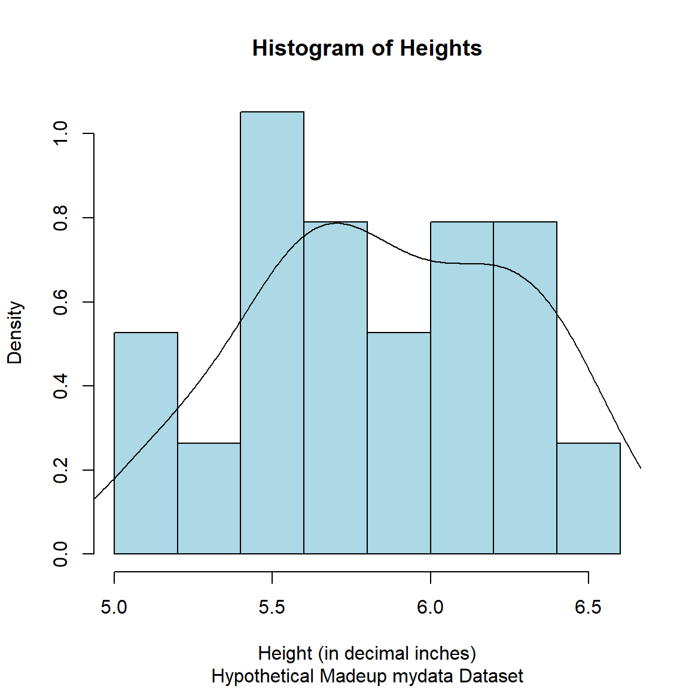
Base R - Barchart
Let’s make a bar chart for the frequencies for the 3 SES categories:
- fill the bars with a yellow color specified by the HEX code
#f7f445 - set the border color as
darkgreenand make the border line thicker by updating thelwd, see Stack Overflow Post on bar width.
# get table of frequencies for each category
tab1 <- table(mydata_corrected$SES.f)
opar <- par() # save current plotting parameters
par(lwd = 3) # change border linewidth
# make plot of the frequencies for
# each category
barplot(tab1,
xlab = "SES Categories",
ylab = "Frequencies",
col = "#f7f445",
border = "darkgreen",
main = "Socio Economic Status Categories",
sub = "Hypothetical Madeup mydata Dataset")par(opar) # reset plotting parameters to defaultsBase R - Boxplot
Make side-by-side boxplots of the heights by gender.
boxplot(Height_corrected ~ GenderCoded.f,
data = mydata_corrected,
xlab = "Gender",
ylab = "Height (in decimal feet)",
col = "#f58ef1",
border = "darkmagenta",
main = "Height by Gender",
sub = "Hypothetical Madeup mydata Dataset")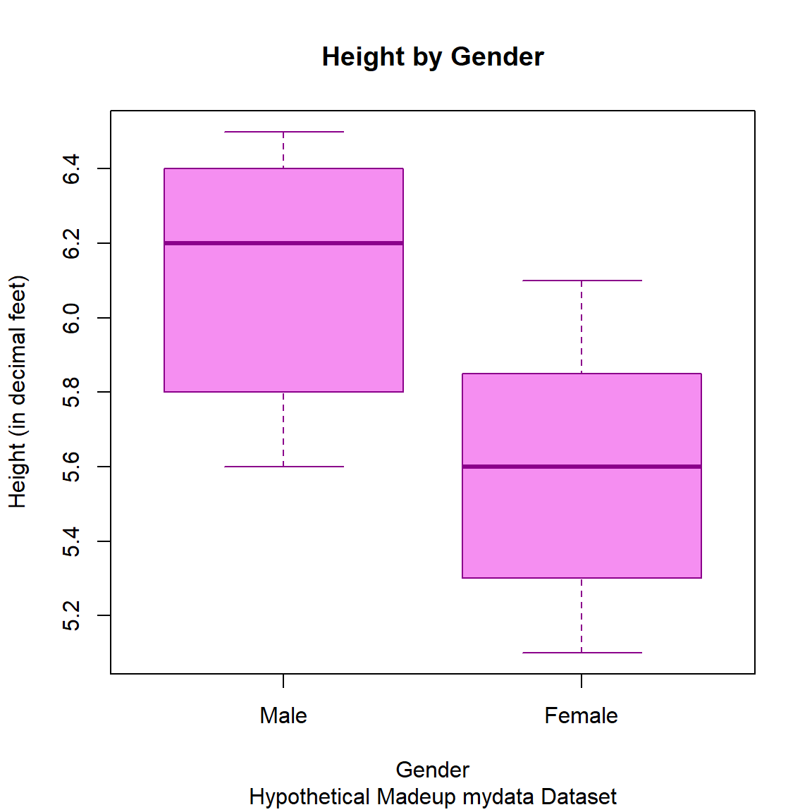
2. The ggplot2 package
The ggplot2 package name starts with gg which stands for the “grammar of graphics” which is explained in the “ggplot2: Elegant Graphics for Data Analysis (3e)” Book.
Why is the package
ggplot2 and not ggplot?
Many people often ask Hadley Wickham (the developer of ggplot2) what happened to the first ggplot? Technically, there was a ggplot package and you can still view the ggplot archived package versions on CRAN which date back to 2006 with the last version posted in 2008. However, in 2007, Hadley redesigned the package and published the first version of ggplot2 (version 0.5.1) was posted on CRAN. So, ggplot2 is the package that has stayed in production and actively maintained for nearly 20 years!!
Given that ggplot2 has been actively maintained for nearly 20 years, it has become almost the defacto graphical standard for R graphics. If you take a look at the list of packages on CRAN that start with the letter “G”, as of this morning 01/28/2025 at 8:23 am EST, USA, there are 230 packages that start with gg - nearly all of these are compatible packages that extend the functionality or work in concert with the ggplot2 package. There are also currently 14 packages on the Bioconductor repository that start with gg.
Let’s make plots similar to the ones above but now using ggplot2. When making a ggplot2 plot, we build the plots using layers that get added to the previous layers.
ggplot2 - Scatterplot
Here are the steps to building a scatterplot.
- First, load the
ggplot2package, designate the dataset and variables (aesthetics) to be included. This creates a plot space with nothing in it - we will add data in the next steps below.
#load ggplot2
library(ggplot2)
# create the plot space
ggplot(data = mydata_corrected,
aes(x = WeightPRE,
y = WeightPOST))
- Next add
+a “geometric object” or “geom” to show the data as points.
ggplot(data = mydata_corrected,
aes(x = WeightPRE,
y = WeightPOST)) +
geom_point()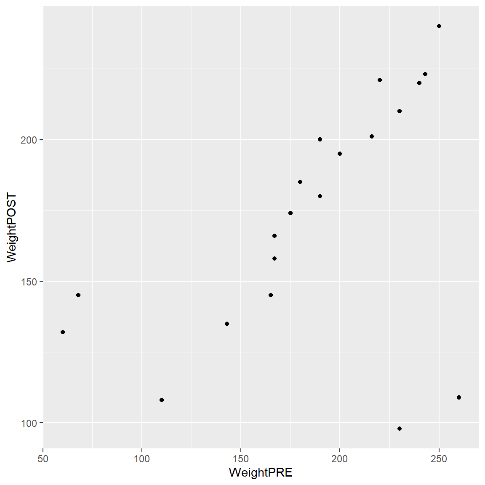
- We can add color by
GenderCoded.f
ggplot(data = mydata_corrected,
aes(x = WeightPRE,
y = WeightPOST,
color = GenderCoded.f)) +
geom_point()- We can also add labels, a title and better legend title
ggplot(data = mydata_corrected,
aes(x = WeightPRE,
y = WeightPOST,
color = GenderCoded.f)) +
geom_point() +
xlab("Weight (in pounds) before program") +
ylab("Weight (in pounds) after program") +
labs(
title = "Weights (in pounds) before and after",
subtitle = "Hypothetical Madeup mydata Dataset",
color = "Gender"
) 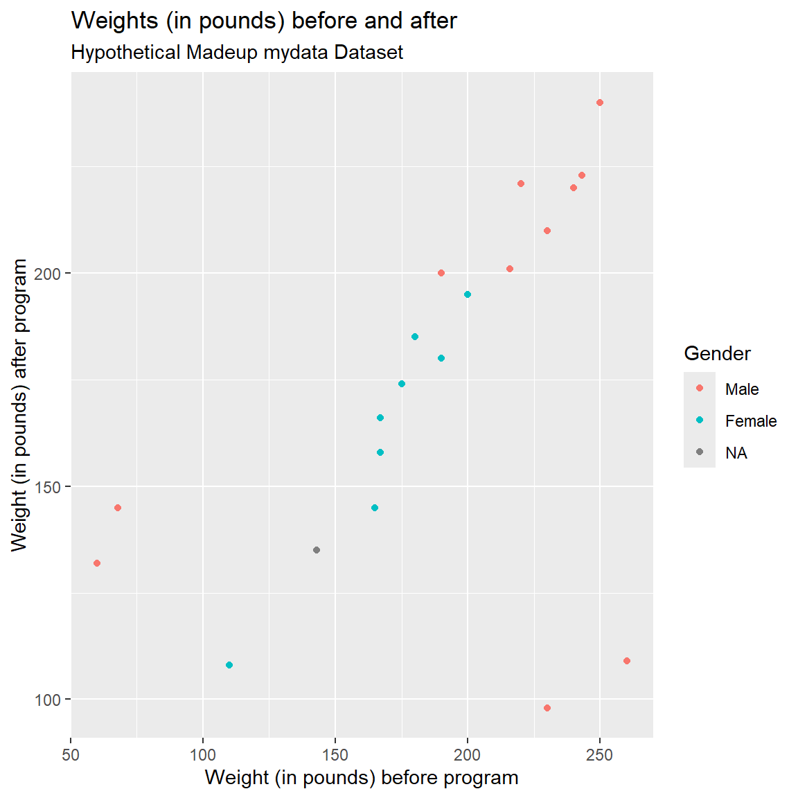
Notice that there are 4 weights that seem off. Also notice that the values are within a reasonable range when considering PRE or POST separately, but when you put them together in a scatterplot you can see that the values are off since we expect PRE and POST weights to be somewhat similar.
- Two individuals have PRE weights that are < 100 pounds (bottom left side of plot).
- There is a good chance that these weights may have been accidentally recorded as kg (kilograms) instead of in pounds.
- And there are 2 individuals with POST weights around 100-120 lbs, but for whom their PRE weights were 225-260 lbs.
- There is a good chance that these two data points may have had a typo in the first number (e.g. a weight of 110 should be 210).
- For this made-up dataset, it also appears that all 4 of these odd data points are Males. It is a good idea to explore other “correlates” that may help identify underlying data collection issues.
Let’s correct these values.
# For WeightPOST, for
# SubjectID 28, change WeightPOST=98 to 198
# since this person's WeightPRE was 230.
# also fix SubjectID = 32, for
# WeightPOST from 109 to 209 since
# their WeightPRE was 260
mydata_corrected <- mydata_corrected %>%
mutate(WeightPOST_corrected = case_when(
(SubjectID == 28) ~ 198,
(SubjectID == 32) ~ 209,
.default = WeightPOST
))Let’s redo the plot with these corrected values - now the PRE and POST weights look similar.
I’ve also added a “reference line” (in “red” color) to the plot below. By adding the line “Y = X” we can also visualize which points are above or below the line for people who gained or lost weight from PRE-to-POST, respectively. It looks like most people lost weight - the majority of the points are below the line where PRE > POST weights.
I also:
- applied colors to each gender category,
- applied shapes to each gender category,
- changed the size of the points,
- assigned custom colors for each gender category,
- the colors are for the non-missing values
- if you want to see the person missing a gender, we have to specifically assign a color for NA using
na.value=
- assigned custom shapes for each gender category,
- the colors are for the non-missing values
- if you want to see the person missing a gender, we have to specifically assign a color for NA using
na.value=
- also notice that I had to provide a custom label in the
labs()for the shape and color legend - the labels are the same so they will be in the same legend box. It is possible to assign the variables for color and shape to different variables.
ggplot(data = mydata_corrected,
aes(x = WeightPRE_corrected,
y = WeightPOST_corrected,
color = GenderCoded.f,
shape = GenderCoded.f)) +
geom_point(size = 2) +
geom_abline(slope = 1,
intercept = 0,
color = "red") +
scale_shape_manual(values = c(16, 17),
na.value = 15) +
scale_color_manual(values = c("blue",
"magenta"),
na.value = "grey30") +
xlab("Weight (in pounds) before program") +
ylab("Weight (in pounds) after program") +
labs(
title = "Weights (in pounds) before and after",
subtitle = "Hypothetical Madeup mydata Dataset",
color = "Gender",
shape = "Gender"
) 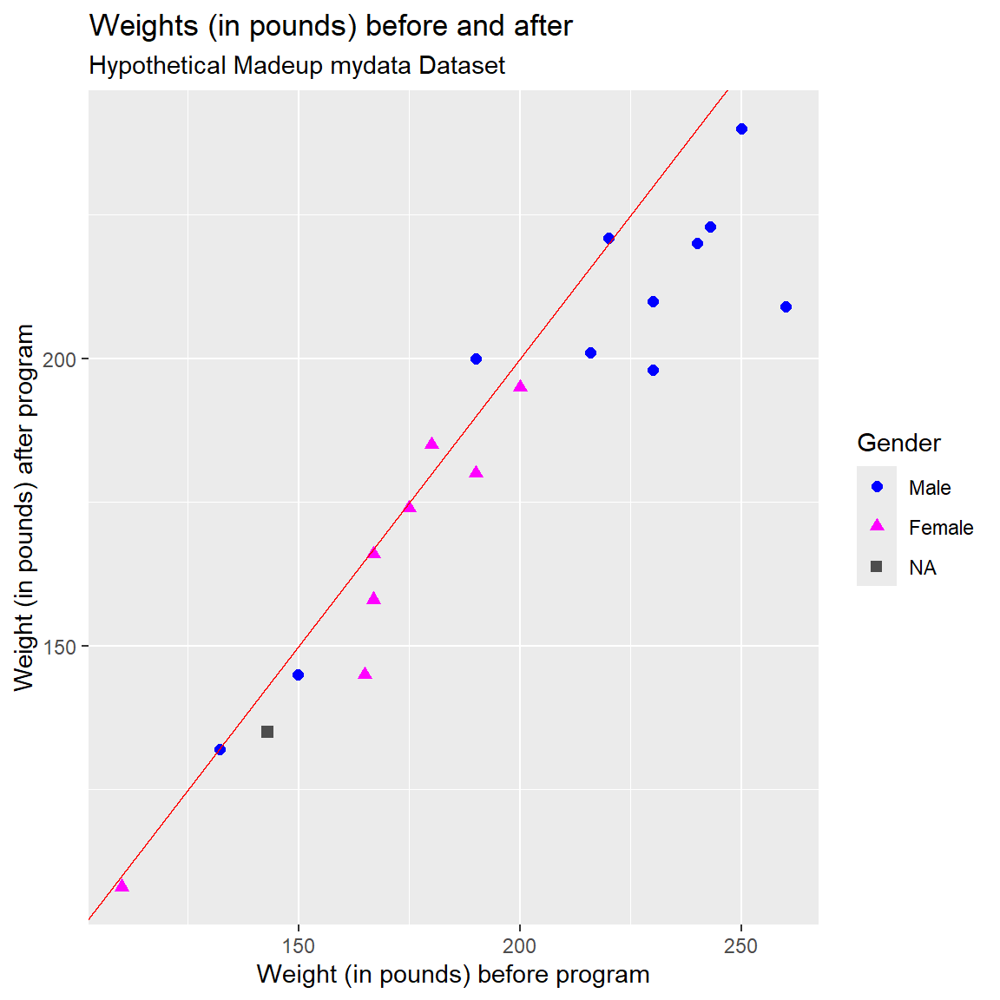
ggplot2 - Histogram
Let’s make a histogram of Age and overlay a density curve like we did above for the heights, but this time using the ggplot2 package functions.
The first step:
- specify the dataset
mydata_correctedand “aesthetics” variablex=Ageinside theggplot()step - then add the geometric object
geom_histogram()
ggplot(data = mydata_corrected,
aes(x = Age)) +
geom_histogram()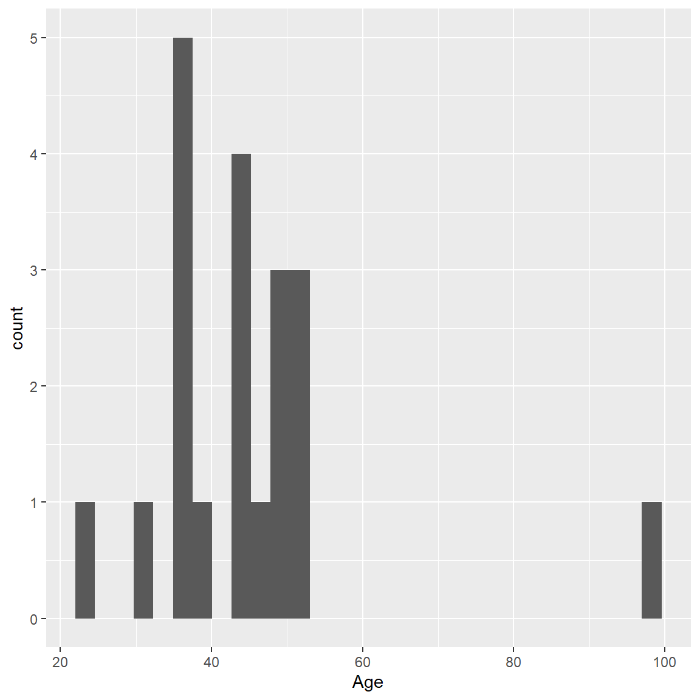
Let’s add some color using fill= for the inside colors of the bars and color= for the border color for the bars.
ggplot(mydata_corrected,
aes(x = Age)) +
geom_histogram(fill = "lightblue",
color = "black")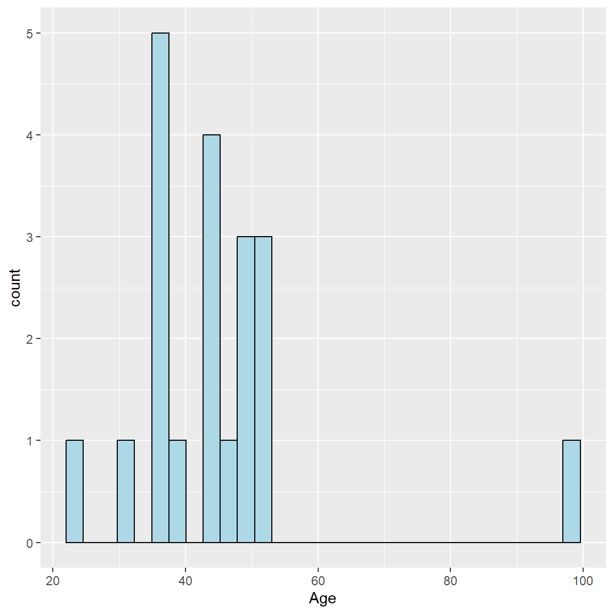
To add the density curve, we need to do 2 things:
- Add an aesthetic
aes()to change from counts (or frequencies) for the bars to probabilities. We can do this using theafter_stat()function.- Learn more by running
help(aes_eval, package = "ggplot2").
- Learn more by running
- And then we can add the
geom_density()geometric object and addcolor=for the overlaid line color.
And I also added some better labels to the axes, title and subtitle.
ggplot(mydata_corrected,
aes(x = Age,
y = after_stat(density))) +
geom_histogram(fill = "lightblue",
color = "black") +
geom_density(color = "red") +
xlab("Age (in years)") +
ylab("Proportion") +
labs(
title = "Ages for Participants",
subtitle = "Hypothetical Madeup mydata Dataset"
)
ggplot2 - Boxplot (and variations)
Let’s look at the corrected PRE weights by SES.
ggplot(data = mydata_corrected,
aes(x = SES.f,
y = WeightPRE_corrected)) +
geom_boxplot()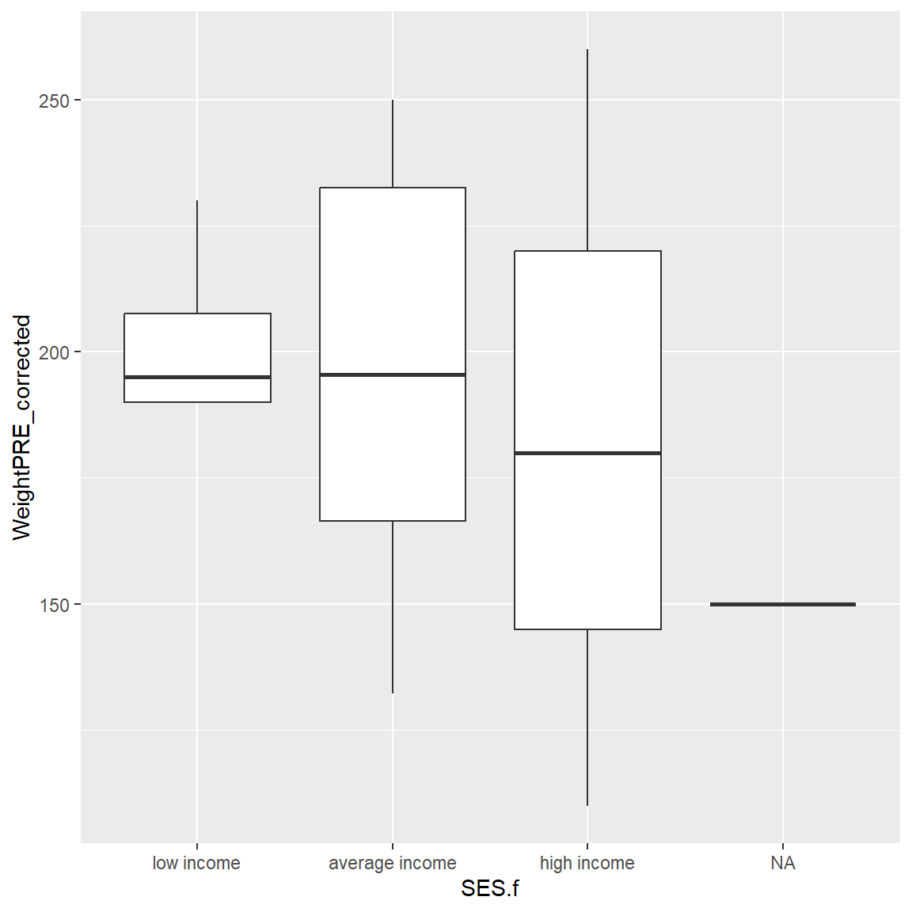
There is one person missing SES. So, let’s filter the dataset and remake the plot. Instead of creating another “new” dataset, we can use the dplyr pipe %>% into our plotting workflow as follows to filter out the missing SES before we make the plot. Notice I can drop the data = in the ggplot() step.
In the filter() step below, I used the ! exclamation point to indicate that we want to keep all rows for which SES.f is NOT missing, by using !is.na().
library(dplyr)
mydata_corrected %>%
filter(!is.na(SES.f)) %>%
ggplot(aes(x = SES.f,
y = WeightPRE_corrected)) +
geom_boxplot()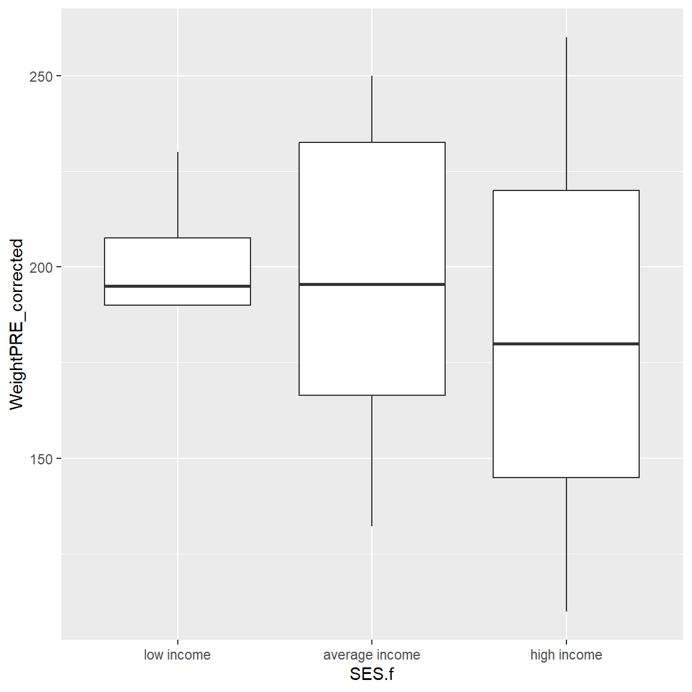
Let’s add a fill color for the SES categories.
mydata_corrected %>%
filter(!is.na(SES.f)) %>%
ggplot(aes(x = SES.f,
y = WeightPRE_corrected,
fill = SES.f)) +
geom_boxplot()And add better labels.
mydata_corrected %>%
filter(!is.na(SES.f)) %>%
ggplot(aes(x = SES.f,
y = WeightPRE_corrected,
fill = SES.f)) +
geom_boxplot() +
xlab("Socio-Economic Status Categories") +
ylab("Weight (in pounds) before program") +
labs(
title = "Weights by SES Categories",
subtitle = "Hypothetical Madeup mydata Dataset"
) 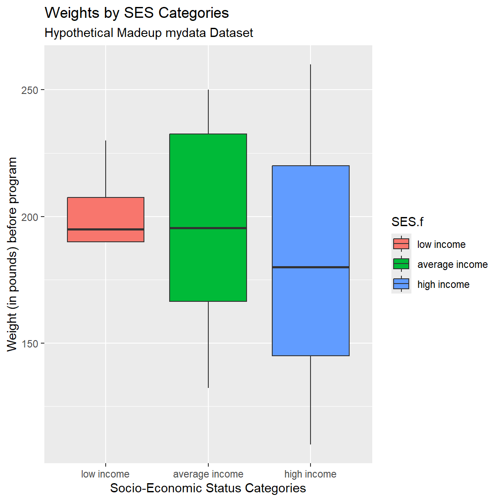
Add Another Layer with Points
We can also add points on top of the boxplots using geom_jitter() AFTER using geom_boxplot. If you switch the order of these “geom’s” you can specify whether the boxplot is on top of the points or if the points are on top of the boxplots (like we did here).
In geom_jitter(), I also added height=0 and width=.10 to adjust the amount of jitter in the vertical and horizontal directions.
mydata_corrected %>%
filter(!is.na(SES.f)) %>%
ggplot(aes(x = SES.f,
y = WeightPRE_corrected,
fill = SES.f)) +
geom_boxplot() +
geom_jitter(height=0,
width=.10) +
xlab("Socio-Economic Status Categories") +
ylab("Weight (in pounds) before program") +
labs(
title = "Weights by SES Categories",
subtitle = "Hypothetical Madeup mydata Dataset",
fill = "SES Categories"
) A couple more packages to look at the distribution of data points by groups are:
Try Another Geom
One of the cool things about ggplot2 is the ability to easily swap out geom’s. Let’s try a violin plot which provides a better idea of the shape of the underlying distributions that you don’t get with a simple boxplot. Change geom_boxplot() to geom_violin(). I also added the bw argument to change the “bandwidth” for how much smoothing is done. Try changing this number and see what happens. Learn more by running help(geom_violin, package = "ggplot2")
mydata_corrected %>%
filter(!is.na(SES.f)) %>%
ggplot(aes(x = SES.f,
y = WeightPRE_corrected,
fill = SES.f)) +
geom_violin(bw=10) +
xlab("Socio-Economic Status Categories") +
ylab("Weight (in pounds) before program") +
labs(
title = "Weights by SES Categories",
subtitle = "Hypothetical Madeup mydata Dataset"
) 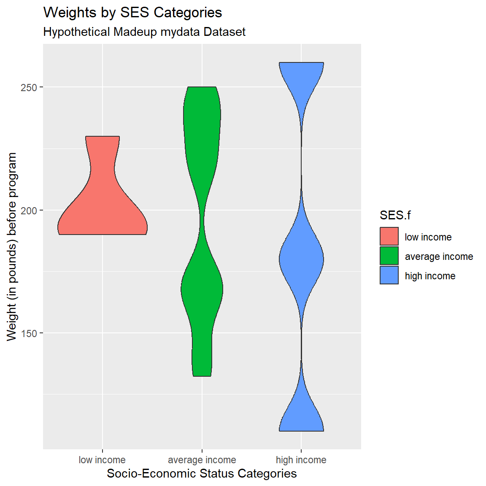
ggplot2 - Barchart
Let’s make a simple barchart for SES.f after filtering out the NAs.
Let’s also make a clustered barplot of SES.f by GenderCoded.f. Let’s also filter out the NAs from GenderCoded.f as well.
To add the 2nd grouping or clustering variable, we add fill= to the aesthetics and then add position = "dodge" for geom_bar() to see the colors side by side instead of stacked.
mydata_corrected %>%
filter(!is.na(SES.f)) %>%
filter(!is.na(GenderCoded.f)) %>%
ggplot(aes(x = SES.f,
fill = GenderCoded.f)) +
geom_bar(position = "dodge")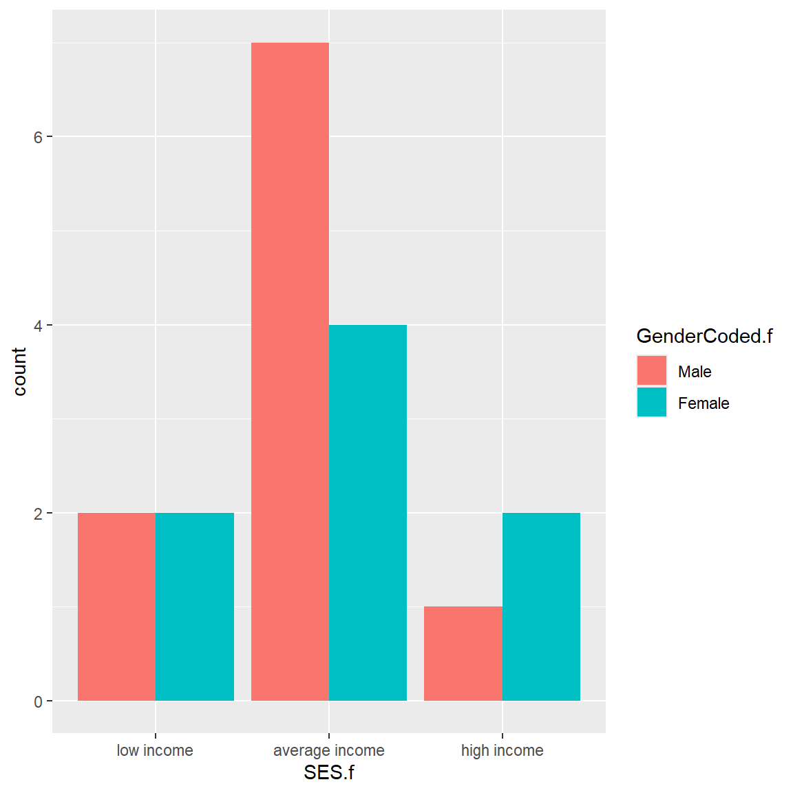
Let’s also add custom colors and better labels.
mydata_corrected %>%
filter(!is.na(SES.f)) %>%
filter(!is.na(GenderCoded.f)) %>%
ggplot(aes(x = SES.f,
fill = GenderCoded.f)) +
geom_bar(position = "dodge",
color = "black") +
scale_fill_manual(values = c("blue",
"magenta")) +
xlab("Socio-Economic Status Categories") +
ylab("Frequency") +
labs(
title = "Frequencies of SES Categories by Gender",
subtitle = "Hypothetical Madeup mydata Dataset",
fill = "Gender"
)
ggplot2 - Errorbar plots
Barplot with Error Bars
Suppose instead of boxplots for looking at the differences in heights by gender, let’s make a plot of the mean heights by gender with error bars added to reflect the 95% confidence intervals for these group means.
First let’s compute the means using the mean() function and we’ll pull the 95% confidence interval limits from the t.test() output for a one-sample t-test.
Save these outputs into another small dataset called dt.
# capture the means of the correct heights
# and get the 95% confidence intervals
# upper bound and lower bound by gender
# filter out the missing GenderCoded.f
dt <- mydata_corrected %>%
filter(!is.na(GenderCoded.f)) %>%
dplyr::group_by(GenderCoded.f)%>%
dplyr::summarise(
mean = mean(Height_corrected, na.rm = TRUE),
lci = t.test(Height_corrected,
conf.level = 0.95)$conf.int[1],
uci = t.test(Height_corrected,
conf.level = 0.95)$conf.int[2])
dt# A tibble: 2 × 4
GenderCoded.f mean lci uci
<fct> <dbl> <dbl> <dbl>
1 Male 6.1 5.86 6.34
2 Female 5.59 5.30 5.88Use this small dataset dt with the means and 95% confidence intervals limits to make this plot.
ggplot(data = dt) +
geom_bar(aes(x = GenderCoded.f,
y = mean,
fill = GenderCoded.f),
color = "black",
stat="identity") +
scale_fill_manual(values = c("blue",
"magenta")) +
geom_errorbar(aes(x = GenderCoded.f,
ymin = lci,
ymax = uci),
width = 0.4,
color ="black",
size = 1) +
xlab("Gender") +
ylab("Mean Height (in decimal feet)") +
labs(
title = "Average Heights by Gender",
subtitle = "Hypothetical Madeup mydata Dataset",
caption = "Error Bars Represent 95% Confidence Intervals",
fill = "Gender"
)
Lineplot with Points and Error Bars
We can also remove the bars and just create a line plot connecting the points for the means with the error bars shown. I set size=1.5to make the lines a little thicker in the plot.
ggplot(data = dt) +
geom_point(aes(x = GenderCoded.f,
y = mean,
color = GenderCoded.f),
size = 3) +
geom_errorbar(aes(x = GenderCoded.f,
ymin = lci,
ymax = uci,
color = GenderCoded.f),
width = 0.4,
size = 1.5) +
geom_line(aes(x = GenderCoded.f,
y = mean),
group = 1,
size = 1.5,
color = "black") +
scale_color_manual(values = c("blue",
"magenta")) +
xlab("Gender") +
ylab("Mean Height (in decimal feet)") +
labs(
title = "Average Heights by Gender",
subtitle = "Hypothetical Madeup mydata Dataset",
caption = "Error Bars Represent 95% Confidence Intervals",
color = "Gender"
)
ggplot2 - Lollipop plots
Another plot that can be useful to help visualize changes between two time points,like PRE-to-POST changes is using a “lollipop” plot which utilizes the geom_segment() to create line segments with points (the lollipops) on each end.
The plot below was inspired by the code example at https://r-graph-gallery.com/303-lollipop-plot-with-2-values.html.
Let’s look at the corrected Weights PRE to POST- sorted by their starting PRE weights.
# sort data by WeightPRE_corrected ascending
data <- mydata_corrected %>%
rowwise() %>%
arrange(WeightPRE_corrected) %>%
mutate(SubjectID = factor(SubjectID, SubjectID))
# Plot
ggplot(data) +
geom_segment(aes(x = SubjectID,
xend = SubjectID,
y = WeightPRE_corrected,
yend = WeightPOST_corrected),
color = "grey30") +
geom_point(aes(x = SubjectID,
y = WeightPRE_corrected,
color = "WeightPRE_corrected"),
size = 3) +
geom_point(aes(x = SubjectID,
y = WeightPOST_corrected,
color = "WeightPOST_corrected"),
size = 3) +
scale_color_manual(
labels = c("PRE", "POST"),
values = c("coral","darkblue"),
guide = guide_legend(),
name = "Group") +
coord_flip() +
theme(legend.position = "bottom") +
xlab("Subject IDs") +
ylab("Weight Change (in pounds) PRE to POST")
3. Other Graphics Packages to Know
Save plot objects and reuse/rearrange them
Once a “chunk” of ggplot code is run, technically a ggplot2 plot object is created. We can save and reuse these objects to create composite figures.
For example, let’s create the scatterplot, histogram and clustered barplot and save each into three separate plot objects p1, p2, and p3.
# make the scatterplot, save as p1
p1 <- ggplot(
data = mydata_corrected,
aes(
x = WeightPRE_corrected,
y = WeightPOST_corrected,
color = GenderCoded.f,
shape = GenderCoded.f
)) +
geom_point(size = 2) +
geom_abline(slope = 1,
intercept = 0,
color = "red") +
scale_shape_manual(values = c(16, 17), na.value = 15) +
scale_color_manual(values = c("blue", "magenta"),
na.value = "grey30") +
xlab("Weight (in pounds) before program") +
ylab("Weight (in pounds) after program") +
labs(
title = "Weights (in pounds) before and after",
subtitle = "Hypothetical Madeup mydata Dataset",
color = "Gender",
shape = "Gender"
)# make the histogram, save as p2
p2 <- ggplot(mydata_corrected,
aes(x = Age,
y = after_stat(density))) +
geom_histogram(fill = "lightblue", color = "black") +
geom_density(color = "red") +
xlab("Age (in years)") +
ylab("Proportion") +
labs(title = "Ages for Participants",
subtitle = "Hypothetical Madeup mydata Dataset")# make the barplot, save as p3
p3 <- mydata_corrected %>%
filter(!is.na(SES.f)) %>%
filter(!is.na(GenderCoded.f)) %>%
ggplot(aes(x = SES.f,
fill = GenderCoded.f)) +
geom_bar(position = "dodge",
color = "black") +
scale_fill_manual(values = c("blue",
"magenta")) +
xlab("Socio-Economic Status Categories") +
ylab("Frequency") +
labs(
title = "Frequencies of SES Categories by Gender",
subtitle = "Hypothetical Madeup mydata Dataset",
fill = "Gender"
)patchwork package
After making and saving each of the ggplot2 plot objects above, we can arrange them into a new composite plot. The patchwork package is really good for making these composite figures.
Learn more at https://patchwork.data-imaginist.com/articles/patchwork.html
ggpubr package and ggarrange() function
Another package that is useful for arrange plot objects into composite plots is the ggpubr package with the ggarrange() function.
GGally package and ggpairs() function
If you would like to make a scatterplot matrix to look at the associations (correlations) between multiple numeric variables at the same time, the GGally::ggpairs() function is useful.
In the plot below, we can see the 2-dimensional scatterplots between the heights and weights at PRE and POST. The plot also provides the Pearson’s correlations for all of the pairwise associations between each combination of 2 variables.
I also added a “best fit” linear line by adding lower = list(continuous = "smooth").
library(GGally)
ggpairs(mydata_corrected,
columns = c("Height_corrected",
"WeightPRE_corrected",
"WeightPOST_corrected"),
lower = list(continuous = "smooth"))
What is really cool about this plotting function is the easy way to add in a 3rd variable like gender to see if these correlations (and scatterplots) change by gender (i.e. does gender moderate the associations?). Notice that we get separate lines for each gender and we get the correlations for each gender as well.
ggpairs(mydata_corrected,
mapping = aes(color = GenderCoded.f),
columns = c("Height_corrected",
"WeightPRE_corrected",
"WeightPOST_corrected"),
lower = list(continuous = "smooth"))
And if we add GenderCoded.f to the list of variable columns to be included, we now also get bar charts for the frequencies of each gender, histograms of each variable for each gender, boxplots for each variable by each gender, along with the density curves by gender and the correlation matrix.

Visualize Categorical Data with vcd package
The vcd package for “visualizing categorical data” has been around for over 20 years!! It is a helpful package for visualizing multiple categorical variables at once.
Let’s visualize the relative proportions of gender and SES using the vcd::mosaic() function.
Example of an animated graph with gganimate
Learn how to make an animated figure with the gganimate package at https://gganimate.com/. The animation demo shown below is of the relationship between Life Expectancy and GDP (gross domestic product) per capita in 142 countries over 12 years from 1952 to 2007.
The animated figure is viewable in the HTML website at https://melindahiggins2000.github.io/emory_tidal_Rlectures/module133_DataVis.html. In the PDF file only a static view is shown for the single year “1976” from the gapminder dataset and R package.
Interactive Graphics with plotly
Another cool package is the plotly graphics package which allows for active interaction with the plot. This works in the RStudio environment (viewing in the “Viewer” window) and from within an HTML formatted document rendered from Rmarkdown.
Learn more at https://plotly-r.com/.
Here is an interactive version (on this website for the HTML version) of the side-by-side boxplots below - with a horizontal orientation. This plot will NOT be interactive in the PDF document but the figure will be shown.
4. Summary Tables with Graphics
There are a number of other packages that allow you to insert small graphs or figures inside of a table.
The R Graph Gallery has a nice summary of table packages with these features. Some of these packages include:
As an example, let’s look at the code at https://r-graph-gallery.com/368-plotting-in-cells-with-gtextras.html for making a table of summary statistics with a plot overview including a list of categories and percentage of missing data for that variable.
library(gtExtras)
mydata_corrected %>%
select(Height_corrected,
WeightPRE_corrected,
WeightPOST_corrected,
GenderCoded.f,
SES.f) %>%
gt_plt_summary()| . | ||||||
|---|---|---|---|---|---|---|
| 21 rows x 5 cols | ||||||
| Column | Plot Overview | Missing | Mean | Median | SD | |
| Height_corrected | 9.5% | 5.9 | 5.8 | 0.4 | ||
| WeightPRE_corrected | 4.8% | 192.9 | 190.0 | 42.3 | ||
| WeightPOST_corrected | 4.8% | 182.2 | 190.0 | 35.9 | ||
GenderCoded.fMale and Female |
9.5% | — | — | — | ||
SES.faverage income, low income and high income |
9.5% | — | — | — | ||
5. Other Places to Get Help and Get Started
- See the summary of graphics resources at Additional Resources - R Graphics
R Code For This Module
References
Iannone, Richard, Joe Cheng, Barret Schloerke, Ellis Hughes, Alexandra Lauer, JooYoung Seo, Ken Brevoort, and Olivier Roy. 2024. Gt: Easily Create Presentation-Ready Display Tables. https://gt.rstudio.com.
Kassambara, Alboukadel. 2023. Ggpubr: Ggplot2 Based Publication Ready Plots. https://rpkgs.datanovia.com/ggpubr/.
Meyer, David, Achim Zeileis, and Kurt Hornik. 2006. “The Strucplot Framework: Visualizing Multi-Way Contingency Tables with Vcd.” Journal of Statistical Software 17 (3): 1–48. https://doi.org/10.18637/jss.v017.i03.
Meyer, David, Achim Zeileis, Kurt Hornik, and Michael Friendly. 2023. Vcd: Visualizing Categorical Data. https://CRAN.R-project.org/package=vcd.
Mock, Thomas. 2024. gtExtras: Extending Gt for Beautiful HTML Tables. https://github.com/jthomasmock/gtExtras.
Pedersen, Thomas Lin. 2024. Patchwork: The Composer of Plots. https://patchwork.data-imaginist.com.
R Core Team. 2024. R: A Language and Environment for Statistical Computing. Vienna, Austria: R Foundation for Statistical Computing. https://www.R-project.org/.
Schloerke, Barret, Di Cook, Joseph Larmarange, Francois Briatte, Moritz Marbach, Edwin Thoen, Amos Elberg, and Jason Crowley. 2024. GGally: Extension to Ggplot2. https://ggobi.github.io/ggally/.
Sievert, Carson. 2020. Interactive Web-Based Data Visualization with r, Plotly, and Shiny. Chapman; Hall/CRC. https://plotly-r.com.
Sievert, Carson, Chris Parmer, Toby Hocking, Scott Chamberlain, Karthik Ram, Marianne Corvellec, and Pedro Despouy. 2024. Plotly: Create Interactive Web Graphics via Plotly.js. https://plotly-r.com.
Wickham, Hadley. 2016. Ggplot2: Elegant Graphics for Data Analysis. Springer-Verlag New York. https://ggplot2.tidyverse.org.
Wickham, Hadley, Winston Chang, Lionel Henry, Thomas Lin Pedersen, Kohske Takahashi, Claus Wilke, Kara Woo, Hiroaki Yutani, Dewey Dunnington, and Teun van den Brand. 2024. Ggplot2: Create Elegant Data Visualisations Using the Grammar of Graphics. https://ggplot2.tidyverse.org.
Wickham, Hadley, Romain François, Lionel Henry, Kirill Müller, and Davis Vaughan. 2023. Dplyr: A Grammar of Data Manipulation. https://dplyr.tidyverse.org.
Zeileis, Achim, David Meyer, and Kurt Hornik. 2007. “Residual-Based Shadings for Visualizing (Conditional) Independence.” Journal of Computational and Graphical Statistics 16 (3): 507–25. https://doi.org/10.1198/106186007X237856.